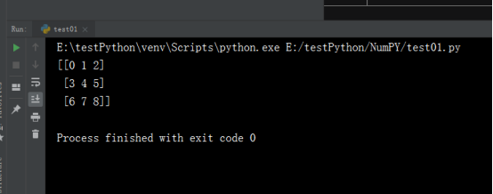
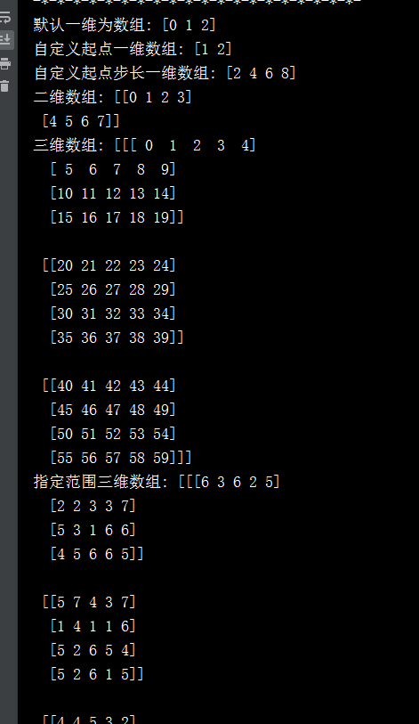

NumPy简介：
python -m pip install --user numpy scipy matplotlib ipython jupyter pandas sympy nose
安装完成后，通过使用pip list可以查看是否已经安装成功了。
2、小试牛刀：
import numpy as np
n= np.arange(9).reshape(3,3)
print(n)
#执行上述代码，输入结果为：输出结果为：

以下对上述内容进行介绍：
1.range(start,end,step)
range函数返回的是一个等差数列。构建等差数列，起点是start，终点是end，公差是step。
start和step是可选项，没给出start的时候，从0开始；没给出step的时候，默认的公差是1.
2. numpy.range([start,] stop, [step,] dtype=None)
start：数字型，可选参数，间隔的开始值，间隔包括开始值，缺省时的默认值是0；
stop：数字型，必填参数，间隔的结束值，间隔不包括结束值，除非一些特殊情况，比如步长不是整数，浮点数的四舍五入影响到输出的长度；
step：数组型，可选参数，间距值，对任何输出，它是相邻两个值之间的差值，out[i+1] - out[i]，缺省的默认值为1，如果指定间距值，开始值也必须指定。
dtype：输出数组的类型，如果没有指定，从输入参数的类型推断输出结果的数据类型（即与输入参数的类型保持一致）。
返回值：等间距的数组，对浮点型参数，结果的长度为 ceil((stop-start)/step)，因浮点溢出，这可能导致最后一个元素大于结束值。
arange()用于生成一维数组
reshape()将一维数组转换为多维数组
再看一组示例：
print('默认一维为数组:', np.arange(3))
print('自定义起点一维数组:',np.arange(1, 3))
print('自定义起点步长一维数组:',np.arange(2, 10, 2))
print('二维数组:', np.arange(8).reshape(2, 4))
print('三维数组:', np.arange(60).reshape((3, 4, 5)))
print('指定范围三维数组:',np.random.randint(1, 8, size=(3, 4, 5)))
1、a.reshape((2,2)) 比如：将a变成为2行，2列；
2、a.reshape(-1,1)这一行 ，a的形状属性未知，期望a变成（只有）一列，行数未知；